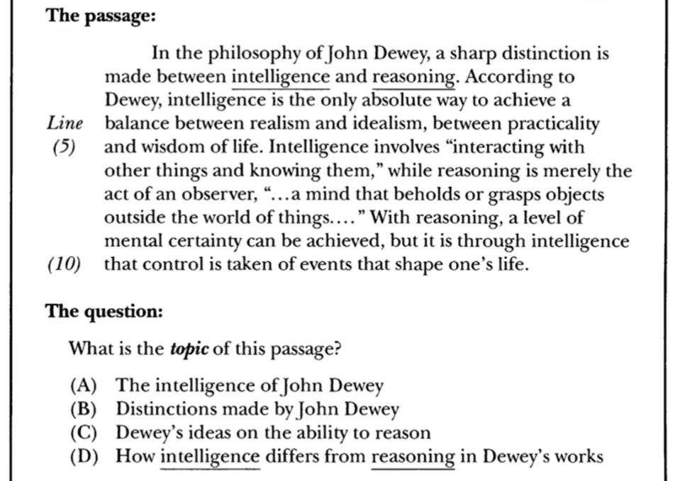
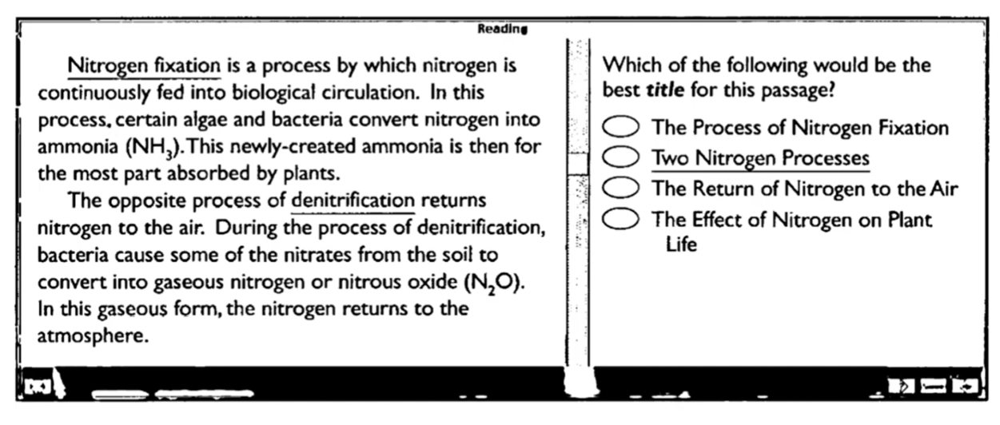
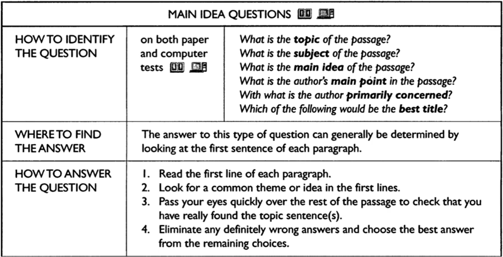
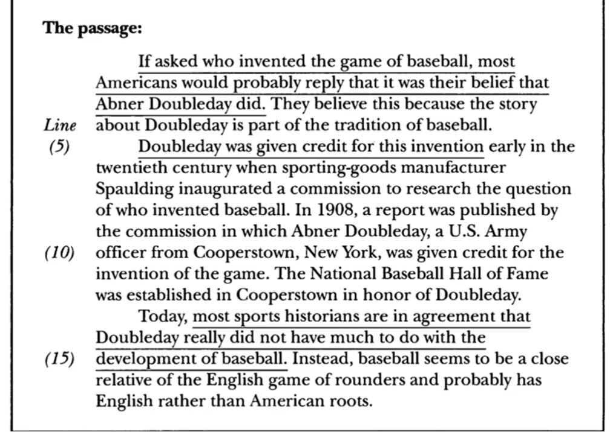
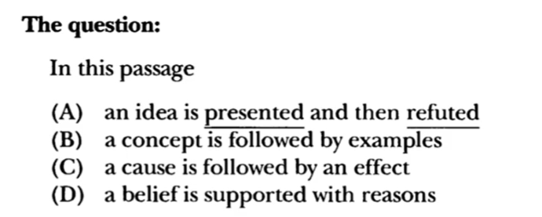
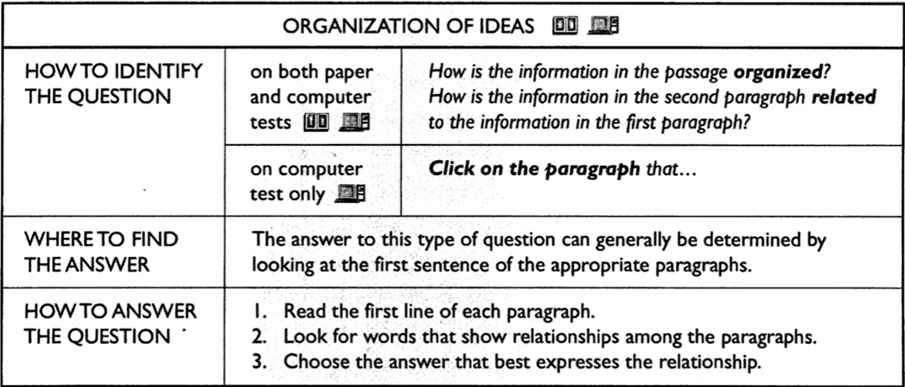

TOEFL Reading — Paket 1
Understanding Main Idea & Organization of Ideas
Pelajari teori lalu uji dengan latihan interaktif (feedback langsung).
Understanding Main Idea
Didalam TOEFL khususnya reading ada akan diminta untuk mencari IDE POKOK dari sebuah teks atau paragraph. Pertanyaan berupa topik, judul, dan ide pokok akan selalu di tanyakan. Karena Text didalam TOEFL di susun secara terorganisir maka relatif ”mudah” mencari jawabannya yaitu dengan mencari topic sentence yang biasanya dapat dilihat di awal setiap paragraph. Apabila jumlah paragraphnya lebih dari satu maka anda harus memahami topic sentence di setiap paragraph tersebut. Contoh :

Contoh:

Kesimpulan

📝 Latihan Interaktif — Skill 1
Recognize The Organization Of Ideas
Didalam test reading TOEFL seringkali kita jumpai pertanyaan yang menanyakan organisasi terkait text, dalam hal ini bagaimana teks itu disusun. Contohnya adalah anda akan diminta untuk menentukan bagaimana paragraph yang satu dengan yang lainnya saling terhubung. Contoh


Kesimpulan
